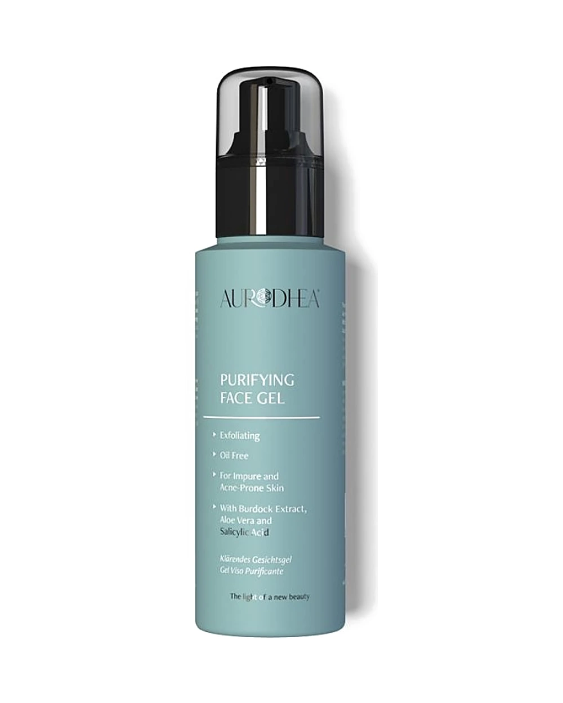

MALOHE
MALOHE
Soins · Acide salicylique
Gel visage purifiant
À l’acide salicylique · 100 ml
Souvent choisi avec
Description
Le gel purifiant pour le visage à l’acide salicylique Aurodhea est un soin spécifique pour les peaux impures et à tendance acnéique, formulé pour agir sur les imperfections cutanées et pour atténuer les boutons et les rougeurs. Il aide à combattre les bactéries responsables des imperfections, en purifiant la peau.
Enrichi en aloe vera, il lutte contre les irritations cutanées et favorise la cicatrisation. L’extrait de bardane, présent dans la formule, se caractérise par ses propriétés purifiantes et séborégulatrices. Il convient aux adolescents et aux personnes à la peau à tendance acnéique, en période de stress, de fatigue, de changements hormonaux ou s’il fait chaud et humide. Il a également une fonction apaisante et rafraîchissante. Testé sous contrôle dermatologique.
Conseils d’utilisation
Appliquer sur le visage le matin et/ou le soir après le nettoyage. Ne pas appliquer avant une exposition au soleil, car il est photosensibilisant. Pendant le traitement, il est recommandé d'appliquer une crème solaire à haute protection (SPF 30 ou SPF 50).